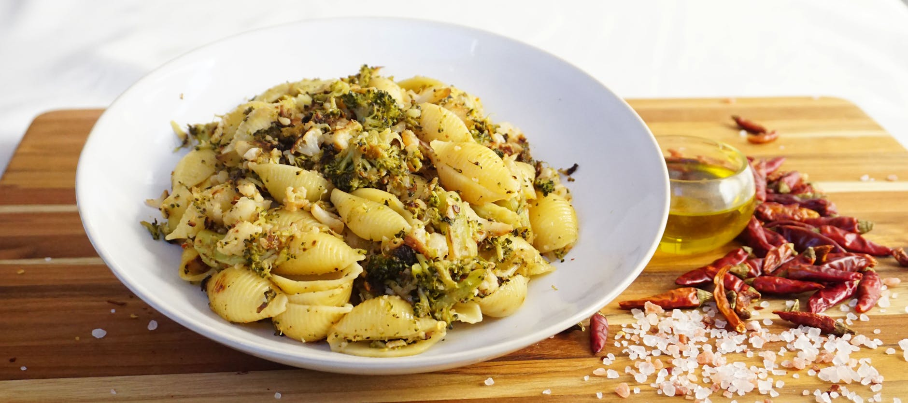

What Foods Lower Inflammation Naturally?
Key takeaways
- Inflammation is a natural bodily process, but when it becomes chronic, it can contribute to a range of health issues.
- The good news?
- Focus on: Tired of Feeling Run Down? Your Kitchen Might Hold the Key..

Tired of Feeling Run Down? Your Kitchen Might Hold the Key.
Inflammation is a natural bodily process, but when it becomes chronic, it can contribute to a range of health issues. The good news? You don't need exotic ingredients or drastic diets to help manage it. Many common foods you probably already have in your pantry can make a real difference. Let's explore how to harness the power of everyday ingredients to lower your inflammation load.
The Power of Your Plate
Think of your diet as a daily toolkit for your body. Certain foods act like tiny helpers, working to calm down the inflammatory responses. Focusing on whole, unprocessed foods is key. This means reaching for colorful fruits and vegetables, lean proteins, and healthy fats.
Berries: Nature's Little Antioxidant Bombs
Blueberries, strawberries, raspberries – these vibrant little fruits are packed with antioxidants called anthocyanins. These compounds are known for their anti-inflammatory properties. A simple way to incorporate them is to add a handful to your morning oatmeal or yogurt. For instance, Sarah, a busy mom, started adding a cup of mixed berries to her breakfast smoothie every day and noticed a difference in her energy levels within a couple of weeks.
Leafy Greens: The Unsung Heroes
Spinach, kale, and Swiss chard are nutritional powerhouses. They're rich in vitamins, minerals, and antioxidants like vitamin E and carotenoids, which help fight inflammation. Try adding a handful of spinach to your scrambled eggs or making a simple kale salad for lunch. Check out some easy salad recipes for inspiration.
Fatty Fish: Omega-3 Powerhouses
Salmon, mackerel, and sardines are excellent sources of omega-3 fatty acids, which have potent anti-inflammatory effects. Aim to include fatty fish in your diet a couple of times a week. If fish isn't your favorite, consider a quality omega-3 supplement. Learn more about the benefits of omega-3s.
Nuts and Seeds: Small but Mighty
Almonds, walnuts, chia seeds, and flaxseeds are loaded with healthy fats, fiber, and antioxidants. Walnuts, in particular, are a good source of omega-3s. Keep a small bag of almonds or walnuts for a satisfying snack, or sprinkle chia seeds into your morning smoothie or yogurt. Explore healthy snack ideas.
Olive Oil: Liquid Gold
Extra virgin olive oil is a cornerstone of the Mediterranean diet and is praised for its anti-inflammatory properties, thanks to compounds like oleocanthal. Use it as a base for salad dressings, for sautéing vegetables, or drizzled over finished dishes. It's a simple swap that can have a big impact. You can find more tips for using healthy oils.
Actionable Checklist: Start Today!
- Add one serving of berries to your breakfast.
- Include a handful of leafy greens in one meal.
- Choose fatty fish for dinner twice this week.
- Snack on a small portion of nuts or seeds.
- Use extra virgin olive oil for cooking and dressings.
Common Mistakes to Avoid
Over-reliance on supplements: While supplements can be helpful, they shouldn't replace whole foods. The synergistic effect of nutrients in food is hard to replicate.
Focusing on just one food: A varied diet is crucial. Don't just eat blueberries; incorporate a range of anti-inflammatory foods for a broader spectrum of benefits.
Ignoring added sugars and processed foods: These can actively promote inflammation. Reducing your intake is just as important as adding beneficial foods.
Educational only — not medical advice.
Embrace the Change
Making small, consistent changes to your diet can lead to significant improvements in how you feel. By incorporating these everyday anti-inflammatory foods, you're taking a proactive step towards a healthier, more vibrant you. Start with one or two changes and build from there!
Frequently Asked Questions
Q: How quickly can I expect to see results?
A: Results vary, but many people start noticing subtle improvements in energy and well-being within a few weeks of consistent dietary changes.
Q: Can I still eat foods that might cause inflammation?
A: Moderation is key. The goal is to increase your intake of anti-inflammatory foods while reducing your consumption of pro-inflammatory ones, rather than complete elimination.
Q: What are some signs of chronic inflammation?
A: Signs can include fatigue, persistent pain, digestive issues, skin problems, and frequent infections. However, these can also be symptoms of other conditions, so consult a doctor.
Q: Are there any anti-inflammatory foods I should avoid?
A: Generally, highly processed foods, sugary drinks, refined carbohydrates, and excessive amounts of red and processed meats can contribute to inflammation.
Q: How much water should I drink?
A: Staying hydrated is important for overall health. Aim for around 8 cups (64 ounces) of water per day, or more if you are active or in a hot climate.
More in anti-inflammatory

What Foods Lower Inflammation Naturally?
Discover everyday foods that can help reduce inflammation in your body. Learn how simple dietary changes can support your health.
Read more →
What Foods Naturally Lower Body Inflammation?
Discover everyday foods that can help reduce inflammation in your body. Simple dietary changes for a healthier you.
Read more →Related posts
What Foods Lower Inflammation Naturally?
Discover everyday foods that can help reduce inflammation in your body. Learn how simple dietary changes can support your health.
Read more →What Foods Naturally Lower Body Inflammation?
Discover everyday foods that can help reduce inflammation in your body. Simple dietary changes for a healthier you.
Read more →
What to Cook When You Have No Time? Quick Weekday Meal Ideas
Struggling with weeknight dinners? Discover simple, healthy recipes and meal prep tips for busy individuals. Make delicious meals in under 3
Read more →